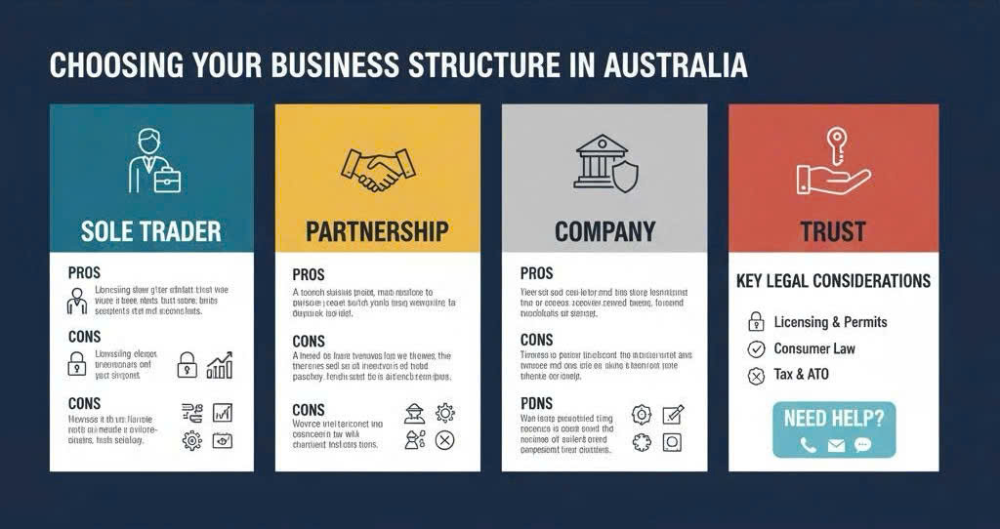

Choosing the Right Entity: Advantages and Disadvantages of Common Business Structures
Choosing the right business structure is one of the very first-and most important-decisions you’ll make when starting a small business or startup in Australia. Your structure shapes everything from your taxes and admin to how you protect your personal assets and even how easily you can grow or sell your business down the line. But with several options available-like sole trader, partnership, company, and trust-it can be hard to figure out which path is best for your unique situation.
Each structure comes with its own set of advantageous and disadvantageous points. How can you be sure you’re picking the right one? Understanding these pros and cons will empower you to make an informed decision and set your new venture up for long-term success.
In this guide, we’ll break down each main business structure available in Australia, explore their advantageous and disadvantageous aspects, and flag the key legal considerations to keep your startup or small business compliant from day one. If you’re feeling unsure, don’t worry-we’re here to help you navigate every step of the journey.
1. What Is a Business Structure and Why Does It Matter?
A business structure is the legal and operational framework that determines how your business is set up, run, and regulated. It affects almost everything about your business life, such as:
- How much tax you pay (and how you pay it)
- Your level of personal liability for business debts
- The regulatory and reporting requirements you must meet
- Your access to funding and ability to bring on investors or partners
- The way profits and losses are distributed
- What happens if you want to sell, transfer, or close your business
Choosing the right structure ensures your business is legally protected and makes day-to-day operations much smoother. Getting it wrong, on the other hand, can expose you to higher tax, legal risk, and unnecessary admin headaches.
2. What Are the Main Types of Business Structures in Australia?
In Australia, there are four common business structures you can choose from. Let’s quickly define each before delving into their advantageous and disadvantageous characteristics:
- Sole Trader: You run the business as an individual (in your own name), even if you use a separate business name.
- Partnership: Two or more people (or entities) share ownership and management of the business.
- Company: A registered legal entity (with an Australian Company Number) that’s separate from its owners (shareholders) and managed by directors.
- Trust: A structure where a trustee holds and manages business assets on behalf of beneficiaries.
Now, let’s look at the advantageous and disadvantageous features of each structure-so you can see which one suits your goals.
3. What Are the Advantages and Disadvantages of a Sole Trader?
Advantages of Being a Sole Trader
- Simple and Low-Cost Setup: Becoming a sole trader is quick, straightforward, and cheap. All you need is an Australian Business Number (ABN) and, if trading under a name, you’ll register a business name.
- Full Control: You make all the decisions and keep all the profits-no need to consult with partners or directors.
- Minimal Reporting: There are fewer compliance and reporting requirements compared to companies or trusts. Accounting and admin are less burdensome.
- Easy to Change Structure: If you want to grow or change, it’s usually easy to transition your sole trader setup to a company or trust.
Disadvantages of Being a Sole Trader
- Unlimited Personal Liability: There is no legal separation between you and the business. If the business is sued, goes into debt, or breaches a contract, your personal assets (house, car, savings) are at risk. Learn more about unlimited liability.
- Tax at Personal Rates: Profits are taxed at your individual income tax rates, which can be higher than the company tax rate if your business does well.
- Limited Funding Options: It can be harder to bring in investors or get business loans, as you can’t issue shares and you are the sole owner.
- May Lack Credibility for Larger Clients: Some clients or suppliers prefer dealing with companies due to added trust and accountability.
4. What Are the Advantages and Disadvantages of a Partnership?
Advantages of a Partnership
- Shared Responsibility and Skills: You can pool resources, expertise, and capital with others, which can drive growth and give your business a wider skill set.
- Simple Setup and Low Cost: Like sole traders, partnerships are easy and inexpensive to establish. You’ll need an ABN and a partnership agreement (which is highly recommended).
- Flexibility: Profits can be split as agreed with your partners, not just by ownership percentages.
Disadvantages of a Partnership
- Joint and Several Liability: Each partner is personally liable for business debts-including those incurred by the other partners. This is a significant risk if things go wrong. Read more about partnership liability.
- Potential for Disputes: Without a strong partnership agreement, disagreements over money, roles, or direction can quickly derail the business.
- No Separation of Assets: Personal assets remain exposed, just as in a sole trader setup.
- Tax at Personal Rates: Business profits are split and taxed at each partner’s personal income tax rate.
5. What Are the Advantages and Disadvantages of a Company?
Advantages of a Company Structure
- Limited Liability Protection: A major advantage is that, as a company, the business is a separate legal entity. Your personal assets are typically protected if the company faces legal trouble or debts, unless you’ve personally guaranteed obligations or broken director’s duties.
- Tax Benefits: Companies benefit from a flat company tax rate (which may be lower than personal rates). Profits can sometimes be retained in the company to defer personal tax.
- Professional Image and Credibility: Having “Pty Ltd” after your name can boost trust among clients, suppliers, and investors.
- Flexible Ownership (Shares): You can easily add or replace shareholders and directors as your business evolves, and raising capital is more straightforward.
- Attracting InvestorsMany investors or venture capital funds prefer (or require) a company structure, as shares are easily issued.
Disadvantages of a Company Structure
- Setup and Ongoing Costs: Registering a company costs more and involves extra paperwork with ASIC (the government regulator), plus ongoing annual fees. See a breakdown of company setup costs.
- Stricter Compliance: Companies must comply with the Corporations Act 2001, including director duties, regular financial reporting, and record-keeping. Penalties apply for breaches.
- More Paperwork and Admin: You’ll need to maintain registers, lodge annual returns, and follow formal decision-making processes.
- Potential Director Liability: Directors can still be personally liable in some cases (such as trading while insolvent, fraud, or failing to meet certain legal duties).
- Distributions Are Taxed: Profits distributed to shareholders as dividends can be taxed again in their hands, though franking credits can offset some of this.
6. What About Trusts and Other Structures?
While less common for brand new startups, trusts are sometimes used for family businesses, investment structures, or holding business assets. They can provide flexibility, tax advantages, and asset protection-but are complex and require expert legal and accounting advice.
- Advantages: Asset protection, flexible income distribution, and can be tax-effective in certain family structures.
- Disadvantages: Expensive and complicated to set up and run. Extensive paperwork and strict trustee obligations. Generally requires an accountant and lawyer.
There are also other special-purpose structures such as incorporated associations (often for non-profits) or unit trusts. These aren’t as common for commercial startups but could be right in specific situations-speak to a legal expert if you think your business falls into these categories.
7. How Do I Decide Which Structure Is Best for My Startup?
The best structure for your business depends on a range of factors, including your growth plans, risk tolerance, financial situation, and the industry you’re operating in. Ask yourself:
- Are you starting solo, or with co-founders or family?
- Do you want to attract outside investors?
- How much risk do you face (e.g., personal safety, large debts, product liability)?
- How much do you expect to earn in the early years - will taxes be a big factor?
- Are you planning to scale up, or keep things lean and manageable?
- Is it important to be seen as a “proper” company in your field?
- Do you need to separate business assets from your own?
There’s no “one size fits all,” and you can always restructure as your business evolves. Many Australian entrepreneurs start as sole traders and move to a company structure when they grow. If you need more detailed guidance, you can read more about the pros and cons of having an ABN (Australian Business Number).
8. Legal Steps to Set Up and Register Your Chosen Structure
A. Register Your Business Name or Company
- Sole Trader: Register for an ABN and optionally a business name (if not trading under your own name). Understand the difference between business name vs. company name here.
- Partnership: Apply for a partnership ABN and register your business name with ASIC (the Australian Securities and Investments Commission) if desired.
- Company: Register the company via ASIC to obtain an Australian Company Number (ACN). You’ll likely need a company constitution and maybe a shareholders’ agreement for multiple owners.
- Trust: Work closely with your accountant and lawyer on your trust deed and choose a suitable trustee (person or company).
B. Set Up Key Legal Documents
Each business type comes with its own set of essential documents. Usually, you’ll need:
- Partnership Agreement: If you’re in a partnership, this agreement sets out roles, responsibilities, and profit sharing. Avoid handshake deals!
- Shareholders Agreement: For companies with multiple owners, this spells out how big decisions are made, how new shareholders can join, and what happens if someone leaves.
- Trust Deed: A must for trusts, setting out how the trust is run and how profits are distributed.
You might also need documents like a Privacy Policy, customer agreements, supply contracts, and employment contracts (if you hire staff). These provide a legal safety net and keep your business compliant from day one.
9. What Legal Documents Does My New Business Need?
- Business Terms and Conditions: Clearly explains what customers can expect from you and your products or services.
- Partnership or Shareholders Agreement: Prevents disputes by setting out ownership, responsibilities, and how profits/losses are shared. See our guide to partnership agreements and shareholders agreements.
- Employment Agreements & Workplace Policies: Covers employee rights, duties, and conditions. Highly recommended when hiring staff.
- Privacy Policy: A legal requirement if you collect personal data from customers or users.
- Non-Disclosure Agreement (NDA): Protects confidential business information when dealing with outsiders or potential partners.
- Supplier / Franchise / Distributor Agreements: Controls the relationship and protects your interests if you rely on external partners.
- Trust Deed: If using a trust structure.
You may not need every document right away, but most businesses benefit from having several of these. Having them tailored to your needs means fewer surprises and fewer disputes down the line.
10. Can I Change Structures Later?
Absolutely. Many founders begin as sole traders or a partnership, and move to a company once they want to limit liability, grow, or bring on new owners. You can even convert a partnership into a company, or set up a trust later on.
Be aware that changes can have tax or legal implications-so it’s a good idea to seek tailored advice before making changes. You can learn more about changing company ownership and the steps involved.
11. Key Takeaways
- Choosing a business structure: One of the most important decisions for your startup or small business in Australia.
- Key aspects: Each structure — sole trader, partnership, company, and trust — has advantageous and disadvantageous aspects, particularly around liability, taxation, cost, and complexity.
- Sole traders and partnerships: Easy to set up but carry higher personal risk.
- Companies: Offer limited liability and growth potential but require more admin and compliance.
- Impact of choice: Your choice will affect everything from how you pay tax to how you protect your assets and bring on investors.
- Compliance: Stay compliant by registering correctly, following industry laws, and having the right legal documents in place from day one.
- Flexibility: You can change structures as your business grows — but always consider the legal and tax consequences before making a move.
- Legal advice: Getting legal advice early can help avoid costly mistakes and set your business up for success.